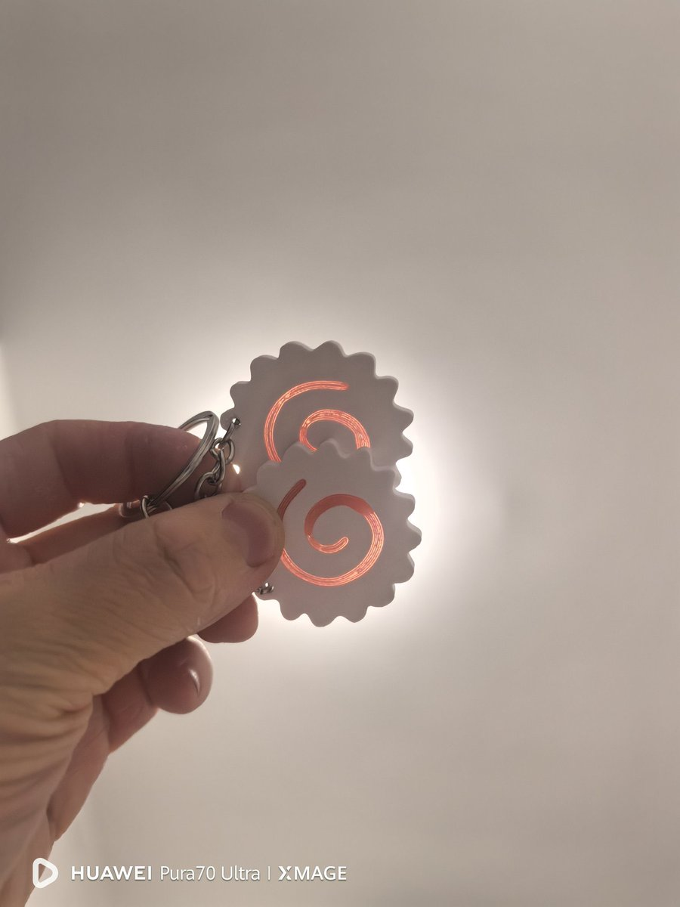

雪秋
@XUEQIUxka
庆祝 9777fo，日常抽奖第12弹！
真的很感谢大家一直以来的喜欢和陪伴，不知不觉，日常抽奖已经做到第12弹了
后面也会继续慢慢准备一些小礼物送给大家
奖品：定制周边小礼物一份，包邮
抽取人数：6人
另外，@Xyliaxka 和 @XUEQIUxka_uk 也会分别额外抽出2份，感兴趣的话也可以过去参加
开奖时间：2026年9月30日 22:00（UTC+8）
奖品于10月10日统一发出
转发、点赞或评论，任意一种都可以参与
后续的抽奖也都会放在亮点里，欢迎参加
整个系列预计总计抽出不少于150份奖品，目前已经发出90+份
再次感谢大家一直以来的喜欢和陪伴
